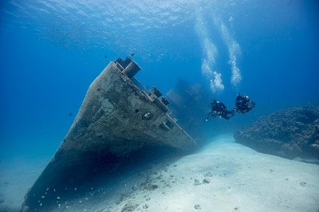
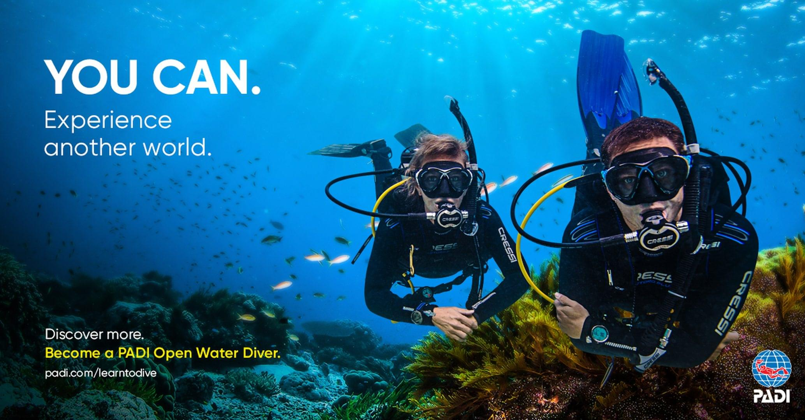
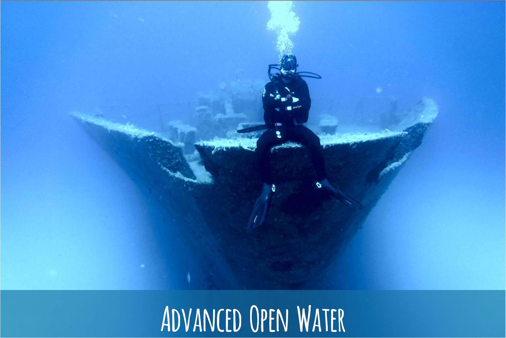
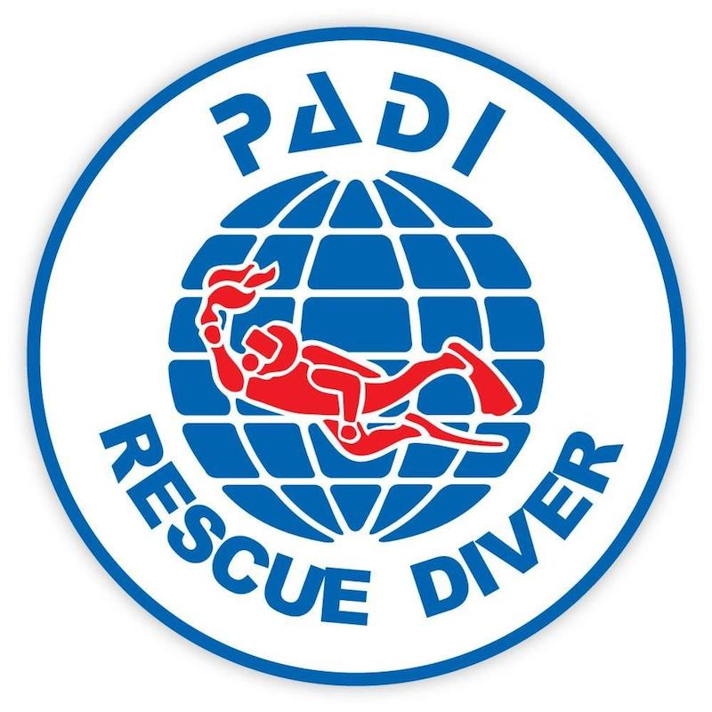

Дайвинг это наркотик
Но хотелось рассказать вам не столько про сам дайвинг, а про критерии и требования к нему.
Так
как на самом деле, дайвинг это не просто нацепить балон с кислородом и прыгать под воду.
Самая популярная система обучения по дайвингу является
международная система PADI
Очень бы хотелось рассказать обо всех курсах которым обучает данная система, но меня поджимает время, поэтому
представлю вам самые популярные.
- Первый и начальный курс обучения - Water Diver длится до семи дней и готовит
будущих дайверов к
погружениям в открытой воде на глубину до 18 метров
- Курс Advanсed OWD это следующий шаг после начального курса Open Water
Diver. Он
позволит вам совершать
самостоятельные погружения с напарником на глубину до 30 метров
-
Дополнительные курсы после освоения ADVANCED OWD
-
PADI Enriched Air (Nitrox)
-
PADI Peak Perfomance Buoyancy
-
PADI Dry Suit
- Rescue Diver - предупреждение аварийных ситуаций и оказание первой медицинской
помощи.
а теперь немного расскажу о них

OPEN WATER DIVER
Первый и начальный курс обучения - Open Water Diver длится до семи дней и готовит будущих дайверов к
погружениям в открытой воде на глубину до 18 метровна курсе Open Water Diver, даст Вам основополагающие умения,
навыки, знания, которые потребуются для ваших
дальнейших самостоятельных погружений. В процессе обучения Вы узнаете: Что такое дайвинг, познакомитесь с
оборудованием и снаряжением для дайвинга, узнаете, что испытывает человек, находясь под водой, с точки зрения
физиологии и медицины, отработаете навыки для комфортного и безопасного нахождения под водой. Все основные
навыки погружения с аквалангом, вы отработаете в исключительно безопасной среде под руководством
квалифицированного инструктора PADI.

ADVANCED OPEN WATER DIVER
Курс Advanсed OWD это следующий шаг после начального курса Open Water Diver.Он
позволит вам совершать самостоятельные погружения с напарником на глубину до 30 метров, самостоятельно
планировать оптимальный профиль ваших погружений, состав группы, конфигурацию снаряжения исходя из тех или иных
условий.
Курс Advanсed Open Water Diver значительно расширит пределы ваших погружений, а главное придаст большую
уверенность, безопасность, знания и опыт.
RESCUE DIVER
Вы научитесь замечать факторы, напрямую отвечающие за безопасность дайвинга,
устранять
нештатные
ситуации, которым ранее не придавали абсолютно ни какого значения  Ваша задача - адекватно, а главное оперативно
реагировать на поведение Вашего напарника, распознавать признаки паники и стресса, а также справляться с
аварийными ситуациями, которые могут возникнуть в процессе погружения. Данный курс настроит Вас на заботу о
жизни и здоровье тех дайверов, которые Вам доверились. А это значит, что повысятся ваши профессиональные
навыки, погружения станут более безопасными и комфортными, как для вас, так и для вашего «бади» партнера.
Кроме того, важным моментом является то, что уровень Rescue Diver является пропуском к обучению на следующей
этапе - Divemaster PADI который является первой профессиональной ступенькой в любительском дайвинге.